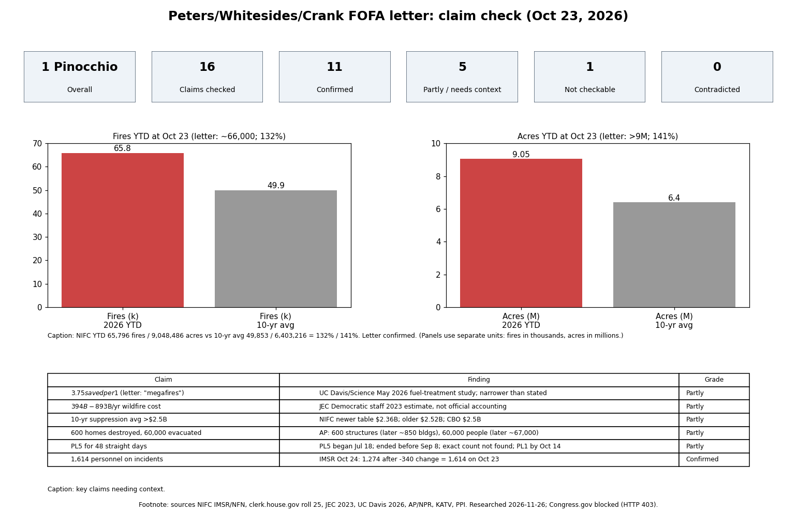

Of 16 claims extracted, 11 are confirmed against primary sources, 4 are true but need context, and none is contradicted; overall grade 1 Pinocchio (mostly accurate, some framing omissions). The fire statistics match NIFC exactly (65,796 fires, 9,048,486 acres through Oct 23, 2026, 132%/141% of the 10-year average) and the 1,614 personnel figure reconciles with the Oct 24 IMSR (1,274 plus a 340 drop).
Answer: see table. Key values: as listed, 2026 and cited years. Confidence: high for NIFC/roll call/IMSR items; medium for secondary-sourced items.
| Claim | Evidence | Grade |
|---|---|---|
| Letter led by Peters, Whitesides, Crank with 28 other Members; to Rogers, Smith, Johnson, Jeffries | Letter PDF lists 31 signers (3 + 28), addressed to those four. Press release text from house.gov | Confirmed |
| ~66,000 fires, >9M acres, 132%/141% of 10-yr average | NIFC Oct 23: 65,796 fires, 9,048,486 acres; avg 49,853 / 6,403,216 | Confirmed |
| PL5 for 48 consecutive days | NIFC: PL5 from Jul 18, Day 25 on Aug 11, PL4 by Sep 8; 48 not directly confirmed. Letter omits PL1 since Oct 14 | Plausible, unverified count |
| 1,614 personnel on catastrophic incidents | IMSR Oct 24: 1,274 total, change -340 = 1,614 on Oct 23. Note PL1 and 'catastrophic' is the letter's word | Confirmed |
| Eastern Washington fires near Fairchild AFB evacuated 60,000, destroyed 600 homes | AP: 600 structures, 60,000 people evacuated (later ~850 buildings, ~67,000). Fairchild issued limited evacuation, lifted Aug 12; airfield unaffected | Mostly true; 'homes' vs 'structures' |
| Bunker Fire near Camden Highland Industrial Park threatened weapons/munitions | KATV/States Newsroom: Sep 14 fire, ~2,849 acres; flames reached area near munitions bunkers, none ignited, no structures lost | Confirmed, 'threatened' fair |
| Guard pulled into firefighting (release) | Washington Guard wildfire mission Jul-Sep 2026; Arkansas Guard dropped 400K gallons at Camden | Confirmed |
| Guard wildfire man-hours grew >10x 2017-2021 | PPI paper; PopSci 14,000 to 170,000 hours. Underlying primary data not located | Secondary only |
| Wildfire costs $394B to $893B/yr | JEC Democratic staff report, Oct 2023; includes real-estate loss, health, etc.; contested, not an official accounting | Real source, framed as settled fact |
| 10-yr federal suppression average >$2.5B | NIFC older table $2.52B; newer $2.36B; CBO $2.5B (2016-20) | Depends on vintage |
| $3.75 saved per $1 on mitigation avoiding megafires | UC Davis/Science May 2026: fuel treatments on ~300 fires, 11 states, 2017-2023; $3.75 per $1; about $2.8B avoided. Not specific to megafires; Science paper itself not read | Supported with caveat |
| FOFA is H.R. 471; Peters led for two Congresses; House passed Jan 2025 | Clerk roll call 25: passed Jan 23, 2025, 279-141. Congress.gov blocked; sponsor/two-Congress claim not confirmed directly | Confirmed (passage) |
| Save Our Sequoias Act H.R. 2709 passed House March 2026 | Passed by voice vote Mar 16, 2026; sponsors Fong and Peters; release says Peters 'led' | Confirmed |
| FOFA only package that is bipartisan, bicameral, with committee process in both chambers | House passed; Senate Ag advanced S.1462 18-5 Oct 2025; no Senate floor vote found. 'Only' is advocacy and unverifiable; 'bicameral' means both chambers have bills, not passed | Advocacy, context needed |
| Quote: 'significant - and growing - hazard to our military readiness and national security' | Appears verbatim in letter | Confirmed |
| Quote: FOFA 'represents our best chance to realize those savings' | Appears in letter ('represents our best chance') | Confirmed |